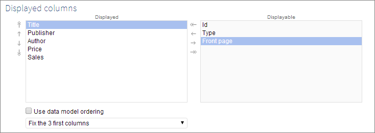
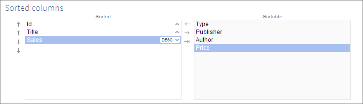
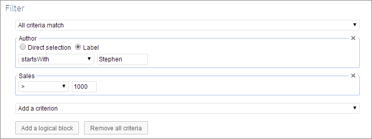
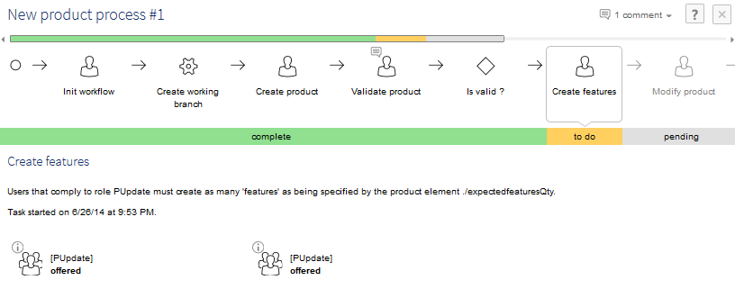
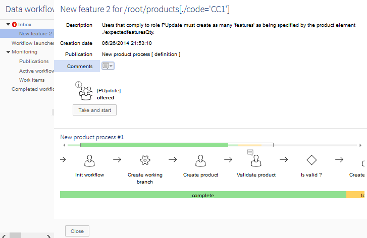

5.5.0 fix A released on July 8, 2014 for bug fixes.
5.5.0 released on July 1, 2014.
This version contains a number of major new features, as well as bug fixes. Most notable features are:
associated objects
parallel workflows and sub-workflows
Increased responsiveness in environments under heavy load, through a deep overhaul of internal locks management
A new type of elements, called association, can be defined in the data model. Such an element provides an abstraction over an existing relationship in the data model, and allows an easy model-driven integration of associated objects in the user interface and in data services.
Two main types of associations are supported:
'By foreign key' specifies the inverse relationship of an existing foreign key field.
'Over a link table' specifies a relationship based on an intermediate link table (such tables are often called "join tables"). This link table has to define two foreign keys, one referring to the 'source' table (the table holding the association element) and another one referring to the 'target' table.
Once the association is defined and its data model published, it is immediately available in the user interface to display the associated objects and manage them by means of operations such as 'Attach', 'Detach', 'Create' and 'Delete'. Associated objects can also be accessed in the data services through the select operation (WSDL generation and SOAP access), The possibility to access associated objects and the way to render them is specified by additional properties in the data model. These additional properties include:
configuring a tabular view to define the fields of the associated objects that must be displayed;
filter associated objects by specifying an additional XPath filter;
define how associated objects are to be rendered in user interface forms (inside a form or in a dedicated tab);
hide/show the associated objects in the data service select operation.
Association properties also allow defining data validation constraints concerning the cardinalities (minimum and maximum number of associated objects) and an integrity constraint based on an XPath predicate.
See Creating associations and Associations for more information.
The second page of the 'Custom view' editor has been reorganized to provide improved usability and a more complete configuration. For a tabular view, it is now organized in three sections:
The section 'Displayed columns' allows defining which columns are present, reordering them and setting which columns are fixed. Fixed columns do not move when the table is scrolled horizontally.

The section 'Sorted columns' allows a more intuitive configuration of the sort than in previous versions.

The section 'Filter' now reuses the same components as the 'Search' pane directly available on the tabular view.

The same filter is also used for hierarchical views, to define the filter at each dimension level.
It is now possible to indicate that a constraint must not block the form submit action, even if a validation error is added.
This is specified in the data model definition of the constraint. For more information, see Blocking and non-blocking constraints.
When history is enabled on a table, this feature allows restoring a previous state of a table record based on its registered history, either by updating its current state or by recreating it if it has been deleted.
See Restore from history for more information.
If a table trigger must have a specific behavior on restore, different from usual creates and updates, the Java developer can use the method TableTriggerExecutionContext.isHistoryRestore.
A new history mode has been added to the existing history modes: 'Current data space and merged children'.
This mode allows viewing the history of a data space together with all of its merged children. This means that all the operations performed on a child data space that has been merged are included in the history view of the parent.
This mode is recursive; that is, if the child data space also has merged children, their history will also be included.
In the history view, since version 5.2.7, the column 'Merge' indicates whether the current operation has been performed in a merge, by displaying the last user who modified this record in the merged child data space. In this case, it also allows viewing the history of the record in the merged child data space.
See History for more information.
The editor for fields of type 'HTML' has been replaced by a more modern one, with new formatting tools. The HTML produced by this new editor is fully XHTML-compliant.
If a form containing an HTML field is saved, an HTML value existing before the upgrade is likely to change, even if no modifications have been made. It is a normal behavior that does not affect the appearance of the text.
The user interface is now fully compatible with Microsoft Internet Explorer 10 and Internet Explorer 11.
When a data space is being merged, a warning message is now displayed in its data sets (similar to the one displayed in the data space itself).
The sub-workflows feature is now available for executing workflows under a main workflow. With this new feature, it is possible to:
Reuse an existing workflow model by including it into another workflow. This is done by invoking a single sub-workflow.
Execute parallel workflows by invoking several sub-workflows. In this case, each sub-workflow represents a parallel branch.
In workflow modeling, a new type of step, called 'Sub-workflow invocation', is now available for defining sub-workflows. It is possible to define a sub-workflow invocation in static or dynamic (custom Java code) mode.
At execution time, when a sub-workflow invocation step is reached, the main workflow is set to waiting state. The main workflow will only continue once all launched sub-workflows have terminated.
All existing administration actions are also available on sub-workflows, except for the actions 'Terminate and clean a workflow' and 'Clean a workflow'.
It is possible to navigate the hierarchy of workflows using the graphical workflow view.
See Sub-workflow invocations for more information.
The existing API has been updated to get the sub-workflows of a workflow.
See ProcessInstance and ProcessInstanceStep in the Java API for more information.
The graphical view of workflows has been modernized, to be more intuitive and match the new flat design standards of the user interface.
Furthermore, comments are now more visible when viewing a data workflow.

The editing interface of work items has been improved. Now, the graphical view of the associated workflow is displayed directly in this view when you edit a work item in the inbox.

It is now possible to define a specific trigger in a workflow model. This trigger is invoked on the main events of the workflow life cycle. In particular, this trigger can be useful for adding logging and clean up.
In this initial version, two events are implemented:
After starting a process instance
Before completing a process instance
See WorkflowTriggerBean in the Java API for more information.
The built-in script task 'Create a data space' has been enhanced to define whether or not automatic cleanup is requested. For this purpose, two properties have been added to the script configuration, specifying whether the created data space must be automatically closed/deleted upon workflow termination.
If a cleanup is requested, the workflow engine ensures that the specified data spaces are properly closed/deleted when the workflow is terminated, be it normally or forced by an administration action.
The API of ScriptTaskBeanContext has two new methods to register the data spaces to close/delete upon workflow termination.
An administration action has been added to force termination of a process instance.
This action is useful to rerun the termination of a process instance when an error has occurred during termination. Sub-workflows can also benefit from this action: if a workflow is blocked because of errors in a sub-workflow, the administrator can force-terminate that sub-workflow to allow the main workflow to progress.
This action is available as an action in the Data Workflows section, as a service in the Administration action, and also in the WorkflowEngine API.
In the user interface, this action is offered only for the sub-workflows and for the workflows which are blocked on their last step.
See WorkflowEngine.forceTerminationWithoutCleaning in the Java API for more information.
The work item API has been enhanced, adding the ability to dynamically define the users who can allocate or reallocate a work item.
See UserTask.getUsersForAllocation in the Java API for more information.
Exporting to CSV and XML files is now supported from all the tables in the Data Workflows area.
It is now possible to specify that fields are always hidden in data services, regardless of the user profile. This can be done by using the new XML Schema element osd:defaultView/hiddenInDataServices="true" under xs:annotation/appInfo.
Some evolutions have been made to the user interface of the data model assistant. Notably, the following improvements have been made:
It is now possible to directly create a foreign key targeting a table in another data set, when creating an element. In prior versions, it was possible to create such a foreign key only when editing an existing element.
The editing of some properties has been enhanced to make it easy to input values that depend on the type of an element or on a specific data type. That is, components adapted to the type of an element or to a specific data type are now displayed when setting the value of the following properties:
default value of an element;
greater than [constant] static control;
less than [constant] static control;
items of a static enumeration;
excluded values static control;
excluded segment static control;
parameters of a component.
Prior to this version, setting the values of these properties required using raw strings based on the XML Schema format of the current datatype.
When using the custom layout API (UIForm), it is now possible to perform custom validation at form submit.
See UIForm.validateForm for more information.
Since version 5.3.0, user input is dynamically validated in Ajax. This allows for example drop-down lists to be dynamically adapted, depending on the user input in previous fields in the form. However, this feature was deactivated for fields displayed by a UI bean, or under a list element.
We now distinguish three levels of Ajax synchronization:
'None', meaning that no synchronization will be done.
'Value synchronization', meaning that only values are synchronized (the constraints are not checked). It is now the default mode for UI beans and list nodes (in previous versions, Ajax was completely deactivated for those components). On a widget, it can be explicitly specified with the new method UIAtomicWidget.setAjaxValueSynchEnabled.
'Ajax prevalidation', meaning that values are synchronized and constraints are checked. It is the default mode for all other nodes. On a widget, it can be explicitly specified with the already existing method UIAtomicWidget.setAjaxPrevalidationEnabled.
The UI beans now have access to the widgets API, thanks to a new set of methods (like UIFormPaneWriter). See for example the new method UIResponseContext.addWidget .
Additionally, the following two methods have been added:
isCreatingRecord, to know if a UI bean editor is called in the context of a record creation. For more information, see UIContext.isCreatingRecord.
isDuplicationRecord, to know if a UI bean editor is called in the context of a record duplication. For more information, see UIContext.isDuplicatingRecord.
The new method getURLForForwardingToResource has been added, allowing to retrieve the URL for forwarding to a resource.
See ServiceContext.getURLForForwardingToResource in the Java API for more information.
At record creation, some fields are pre-set according to the user interface context (for example, for the 'Create' operation in the context of an association, or a hierarchy).
Values are now pre-set before any trigger execution, and are therefore available during trigger execution.
See TableTrigger.handleNewContext in the Java API for more information.
In order to resolve a predicate on the label instead of the value, a new function, osd:label(), can now be used in the path portion of the atomic predicate.
For example, osd:label(./delivery_date)='12/30/2014' and ends-with(osd:label(../adress),'Beijing - China').
See Predicate on label and SchemaNode.displayOccurrence for more information.
If defined in the data model, simple or complex elements can be ignored from tables and changes operations.
See Hide fields in data model and Data services content policy for more information.
It is possible to export the first level of associated objects, using the select operation. The generated WSDL is self-sufficient for association structures, even if the target table is defined in another data model. The exported data can come from different data spaces.
See Association field and Select operation for more information.
The getChanges operations can now enable pagination to limit the size of individual responses.
See Get changes requests for more information.
Hotplugging and easy configuration are now possible when adding D3 slave nodes using the JMS protocol: all slave nodes having JMS activated now consume two shared queues for communication and archive (instead of two specific queues by slave).
See How to upgrade D3 nodes using the JMS protocol for backward compatibility notice.
The perimeter of compatible JMS providers is extended. To create a JMS connection, EBX5 now retrieves the preferred 'JMS Common Interfaces' (ConnectionFactory) instead of the PTP Domain Interfaces (QueueConnectionFactory).
According to the JMS specification 1.1, the developer of JMS clients needs to use the domain-independent or 'common' APIs.
However, the JMS provider must support Point-to-Point messaging (PTP).
See Java EE deployment.
Replication to the database is now available in D3 slave delivery data spaces. The replicated content will be that of the last broadcast snapshot.
See Replication for more information.
The configuration of the D3 master node is validated when starting the broadcast and initialization operations, on a scope corresponding to the operation. This allows early detection of any configuration error regarding the concerned operation, while ignoring errors regarding other D3 configuration items.
See Broadcast conditions and Initialization conditions.
The getD3SlaveFromId(String aSlaveId) method is deprecated and replaced by D3NodeAsMaster.getD3SlaveFromRepositoryLabel.
The method D3NodeAsMaster.getD3SlaveFromRepositoryId is added in order to retrieve a D3Slave for a given repository ID.
The getSlaveId() method is deprecated and replaced by D3Slave.getRepositoryLabel.
The lock management policy in EBX5 core has been deeply reviewed, in order to allow greater concurrency. In environments supporting heavy load (with many users, large volumes and some mass-updates), it is expected that the EBX5 user interface will be much more responsive.
However, with the new lock scheme, a few operations still require a global exclusive lock on the EBX5 repository: data models publication and refresh, cleanup, and repository shutdown. As a consequence, these operations may take a longer time to get started. Other changes concerning the data models publication and refresh are detailed in the section Repository initialization, data models publication and refresh below.
A new Java interface, ReadOnlyProcedure, is available: it is recommended to use it for read-only transactions, since it is able to share locks with other read-only transactions. An unlimited number of read-only transactions can then be run concurrently with no inter-locking.
For more information, see ReadOnlyProcedure.
The validation of Foreign key constraints has been optimized. On some cases, it has been observed that the duration of the validation process is reduced by several orders of magnitude (3000 times faster for the whole validation of a single tableRef).
In the product documentation, the section Transaction cancels has added warnings regarding the use of functional guards in triggers and more generally the impacts of transaction cancels.
In order to support the higher level of concurrency introduced in this version, it is necessary to upgrade the H2 driver to version 1.3.170 or later (this version, in turn, requires using a JRE 6 or later).
To correct bug #10153, all data models used through the open data spaces are now loaded and compiled during initialization of the repository. Consequently, restarting an application server can now take a longer time until the EBX5 repository is ready.
Additionnally, to correct bug #3952, and in the context of the overhaul of the core locking system, the data model publication/refresh operations now acquire an exclusive repository-level lock. This implies that these operations can take a longer time to get started and that, once started, most of the other operations (data access and update, validation, etc.) will wait until the publication or the refresh completes.
Finally, in order to preserve consistency between data and their data model in the context of an explicit transaction, it is now explicitly forbidden to run a data model refresh programmatically from a running procedure. For more information, see Repository.refreshSchemas.
Publishing and refreshing data model(s) include some operations that may require several seconds each (depending on the tables size): these operations include creating or updating database indexes in relational mode, refreshing replica tables for 'onCommit' replications. Publishing and refreshing also include custom setups of programmatic resources, such as constraints, etc.
An unquoted criterion of string type used to be accepted when the criterion text was a number ( i.e. ./string=22). This is no longer the case, and ./string='22' must be used. As before, in the case of a decimal field, ./decimal='22' is forbidden.
Column 'Data set' (name='dataSetReference') has been removed from the table 'Custom views' (name='tableViews'). As a consequence, contents exported before this release must be adapted before importing those contents.
The process instance API has been updated, to manifest that the data context of a process instance can only be accessed in read-only mode (previously, invoking DataContext.setVariableString on such a context was allowed, although it had no effect). Existing code which did not make this distinction has to be updated to resolve compilation errors.
See ProcessInstance.getDataContext in the Java API for more information.
Workflow contexts has been refactored. All information about process instance is accessible by the new method getProcessInstance. The other methods about process instance details have been deprecated.
See ProcessExecutionInfoContext.getProcessInstance in the Java API for more information.
The WSDL generated by EBX5 has been fixed due to the non-conformity of the namespace name and target namespace URI syntax.
In previous versions, the generated namespace name was "ebx-dataservices",
Generated namespace name is now fixed to "urn:ebx:ebx-dataservices".
In a D3 architecture, it is necessary to upgrade master nodes first, then hubs and finally slaves. Then, for each D3 node, the following actions must be done. When all D3 nodes are upgraded, the slave-specific resources queues and their JNDI mappings can be deleted.
On hub or slave nodes, inside the ebx.properties, set the ebx.jms.d3.master.repositoryId corresponding to the master repository ID.
The jms/EBX_D3SlaveCommunicationQueue environment entry defined in web.xml becomes mandatory if JMS for D3 is activated. Therefore, QueueIn cannot be consumed to handle slave requests from the master node.
Some JMS resource environments have been renamed, such as 'jms/EBX_D3MasterQueue' which has been replaced by 'jms/EBX_D3MasterCommunicationQueue', and 'jms/EBX_D3SlaveArchiveQueue' which has been replaced by 'jms/EBX_D3ArchiveQueue'. Note that, inside the web application archive ebx.war provided in the EARs, the mapping resource environments and default JNDI keys have been added for Weblogic and JBoss application servers.
See Java EE deployment for more information.
In order to upgrade your version of EBX5, perform the following steps:
Backup your repository, including the RDBMS and the directory ebx.repository.directory.
Replace the *.war and ebx.jar files on your application server.
[11540] Inconsistent cache after refresh schemas.
After a schema refresh, it can happen that empty table caches are not invalidated. This will lead to inconsistent behavior (possible error messages: "unique constraint EBXHTB_PK violated", or "adaptation [x] does not exist in home [b]").
[11354] Incorrect behavior when publishing a data model containing an association with deleted field in its 'Displayed' selector.
This issue occurs in a custom view, when the user deletes from the target table a field which was previously defined in the 'Displayed' selector. An error is displayed when the user publishes the data model, even though the deleted field is no longer displayed in the 'Displayed' selector.
[11438] Updates on data model in a module are not taken into account when publishing the data model.
The updates that are done on a data model in a module are not taken into account in existing data sets when publishing the data model. The updates are correctly generated in the target XML Schema document, but the data model needs to be explicitly refreshed to update the structure of existing data sets.
[11447] Nodes' documentations are ignored for locales other than FR-fr and EN-us when importing an XSD in the DMA.
Nodes' documentations are ignored for locales other than FR-fr and EN-us when importing an XSD in the DMA.
It works when the XSD is imported from a module.
[11484] An error occurs when the DMA is not deployed.
An IllegalArgumentException occurs if the module ebx-dma is not deployed on the application server.
[11508] An error occurs when accessing the history of a table that contains an inter-data set foreign key.
If a table declares a foreign key referring to a table in another data set in the same data space, an UnavailableContentError occurs when accessing the history of this table.
[11538] An error occurs when accessing the history of a table that contains a field that is unique.
If a field is set as unique in an XML Schema document (using the element xs:unique), then an error occurs when accessing the history of a table defined in the same data model.
[11448] Validation messages added by a constraint on table cannot be removed in a child data space.
Validation messages added by a constraint on table that came from a parent data space cannot be removed from the child using the method ValueContextForValidationOnRecord.removeRecordFromMessages(ValueContext). However, this method works fine after resetting the validation report of a data set in the child data space.
[11485] For a field computation rule, setting a literal formula generates a ClassCastException.
For a field computation rule, setting a literal formula as 'a' generates a ClassCastException
[11261] A ClassCastException may occur if the user enters a term instead of a predicate expression.
If the user enters a word, i.e. bulgroz, instead of a predicate expression, i.e. ./path='a' A ClassCastException is thrown.
[11481] Incorrect behavior when displaying a custom view with HTML tags in its 'Documentation'.
When user applies a custom view with HTML tags in Documentation, the view is displayed incorrectly.
[11530] Incorrect behavior when creating a custom view for a table containing a labeled field.
If a field has a label, both the label and name of te field will be displayed in the "Custom view" creation screen.
[11532] A fatal error occurs when comparing records on the hierarchy view.
In the hierarchy view: if a record is clicked several times, the number of selected records displayed is "2". A fatal error then occurs when the records are compared.
[11533] The custom view that defines a filter is not filtered correctly right after creating and applying.
When the user creates a custom view which defines a filter, then applies this view, the filter is not applied correctly. The filter is only applied after the user navigates to another page and then comes back to the view.
[11454] "Select all" check box in Text search is unchecked after applying search in data workflow tables.
In Data workflow tables, after the user applies text search with 'Select all' mode, the 'Select all' check box is automatically unchecked.
[11422] Closing popup causes errors, if behind a reverse proxy.
When the user wants to close a pop-up by clicking on the 'Close' icon, this operation fails, and displays HTML code. This happens if the application is deployed behind a HTTP server in reverse proxy mode.
[11428] The header is not displayed for an association node in a custom layout.
When a form row is displayed for an associated node, the header of the table is not displayed
[11445] Duplicate submenus on the data space service menu.
Instead of being grouped in the same sub-menu, addon menus are duplicated on the data space menu in seemingly random order.
[11527] [IE8, 9, 10] Unnecessary pop-up is displayed after selecting Data space key on Data services.
[IE8, 9, 10] On the first "Operations" field of Data on the "Data services" panel, if the user selects one data space for Data space key: the system displays a confirmation pop-up which is unnecessary.
[3986] Obsolete data cannot be cleaned after schema evolution.
Data may not be reloaded after schema evolution. Mainly, it may log errors while loading, and no administrative procedure is available to clean persistent repository.
[9462] Data model compilation not completed when accessing a data space the first time.
During the application server restart, an error can occur if there is a concurrent access to a table in a data set whose data model compilation is not yet completed.
[9946] Application liveness issue during a massive data space and table load.
If multiple data spaces and tables are accessed for the first time since the application server restart (or if they are reloaded), the user interface is no longer responsive.
[10238] An error occurs at server startup.
A RepositoryAccessException occurs when computing the size of the HTB table at server startup, if the size exceeds the maximum value for an integer.
[10299] The method TableTrigger.handleBeforeCreate is not called before the internal check for record uniqueness.
The method TableTrigger.handleBeforeCreate should be called before performing the internal check for record uniqueness.
[10594] Executing a purge while creating a data space can lead to repository inconsistencies.
The records for the data space and initial version is present in EBX_HOM although there is no reference to this home in "Data spaces/snapshots" table.
[10704] A user with an empty login can authenticate, but it then leads to errors.
A user with an empty login can authenticate, although this should not be possible. The fact is that if this user performs some updates in EBX5 repository, it then leads to errors when the repository is accessed.
[10745] A fatal error occurs on record creation, if the table is used by a foreign key in a historized table.
The incremental validation throws a ClassCastException.
[10924] An error occurs when deleting a record in a historized table with an inherited field using a computed foreign key.
IncompatibleChangeError is thrown when deleting a record in a historized table which contains a field that is inherited using a computed foreign key.
[10992] A ClassCastException can occur while paging a table or hierarchy.
A ClassCastException can occur while paging a table or hierarchy or a table, due to a wrong handling of index optimizations.
[11329] Cannot import archive after some data model evolution.
Import archives fails with a class cast exception with relational modes after data model evolution making a value initially mapped to a single column, mapped to multiple database columns.
[4509] A compilation error occurs with mutually-referencing data models in different data spaces.
Depending on the loading order of the data spaces, data model compilation can encounter a java.lang.NullPointerException during validation if two data models in different data spaces reference each other using tableRef branch="...".
[8291] In a tabbed form, when the first tab content is not long, the next tab content briefly appears.
Original label: "In the DMA, the validation report the included models table is displayed in the current data model"
In the table of included data models, after saving a new included data model record in embedded mode, the validation report of the included model is displayed in the current model.
[10385] In a relational model, a field that was previously a selection node cannot be used afterwards.
This issue occurs in a relational model, when the user sets the 'Selection' property of a field to 'not defined'. The field can no longer be used afterwards, since its field 'maximum number of values' automatically returns to '0' and cannot be modified.
[10393] A validation error is still displayed after correcting an error in a complex data type defined as an embedded table.
When setting a complex data type to be an embedded table, the user interface shows a validation error. After correcting this error, the validation error is still displayed.
[10394] No validation error message is displayed when setting a complex data type as an embedded table.
When setting a complex data type as an embedded table, no validation error is displayed. However, after publishing the model, a validation error appears.
[10416] The value of 'Conversion error message' property is not taken into account.
This issue occurs on Date, Time and DateTime types which define a conversion error message. When inputting an invalid value on those fields, the default error message is displayed instead.
[10462] In the DMA, the mandatory field asterisk is placed before 'Name' field on the 'Edit publication' page.
In the DMA, the asterisk denoting that the field 'Name' is mandatory on the 'Edit publication' page is placed after the label instead of before it.
[10472] In the DMA, the asterisk indicating a mandatory field is not placed correctly.
In the DMA, the asterisk denoting that the field 'Version name' is mandatory on the 'Create a new version' page is placed after the label instead of before it.
[10480] When displaying a data set node form as a web component, unwanted nodes are also displayed.
For example, if the user accesses the validation report pop-up of 'Data model properties' with a missing 'Model path in module' error, the labels of the data model 'Configuration' tables are displayed with other non-terminal nodes.
[10484] 'Previous' and 'Next' buttons are missing from the 'Replications' record view.
In a data model, when the user accesses a record view of a replication table containing several records, the 'Previous' and 'Next' buttons are missing from the top of the page.
[10536] No validation error displayed after creating a foreign key which refers to a table defining a specific acces properties.
It is possible to define a foreign key which refers to a table declaring a specific access property (osd:access) but an error is raised when publishing the data model.
[10538] Should not display arrow button for 'move before' action.
If the 'move before' action is impossible to perform on an element, the arrow button should not be displayed.
[10561] Cannot replicate a table from an existing data set that uses a schema in a repository.
It is not possible to replicate a table from a data set that uses a schema in a repository that has been migrated to an embedded publication.
[10587] It should be possible to refer to 'Catalog of User Defined Attributes' as Referenced table directly by using wizard button.
When creating a foreign key that refers to 'Catalog of User Defined Attributes' table, one has to define it manually.
[10701] An exception occurs after deleting a referred record whose foreign key field uses 'Error management policy'.
In the data set, after deleting a referred record whose foreign key field specifies 'Blocks all operations with errors' (in 'Error management policy' of foreign key constraint), the system logs an exception.
[10872] The 'auto-increment' property should not be available on a field of type decimal.
The 'auto-increment' property is available only for xs:int and xs:integer types.
[10873] In the 'auto-increment' panel, 'Start value' and 'Increment step' are set to 0 when these attributes are not specified.
In the 'auto-increment' properties of a field, when the user does not specify 'Start value' / 'Increment step' and clicks 'Save', these fields are set to 0, which is not an acceptable value.
[11157] [IE9][IE10] The value specified in 'Default label' field is null after saving.
This issue occurs when the user specifies a 'Default label' for a foreign key. If the 'Default label' drop-down menu is scrolled further, the value is not saved with the form. This issue occurs on IE9, IE10
[5617] Data service credentials are not associated with the pagination parameter for 'select' operations.
When a user sets exportCredentials to 'true' in a 'select' operation and defines a pageSize, all records are returned in the credentials section.
[9961] Version parameters are unnecessary for update, delete and insert requests.
When an operation with data modifications in a table is performed, it cannot be applied to snapshots, due to the version parameter. This parameter should be removed, making the branch parameter mandatory.
[10841] 'Page size' parameter must be removed from a multi-request operation.
When a user creates a multi-request operation, it is possible to specify a pagination parameter, although this makes little sense in the context of this operation.
[10843] WSDL for technical data does not match XML response.
When a select request operation has technical data activated, the XML response is always invalid regarding the WSDL structure.
The WSDL has been fixed to conform to the XML response.
[11123] JMS connection fails using Websphere MQ.
JMS provider implementation com.ibm.mq.jms.MQConnectionFactory is not supported.
[11227] Improve verification of the 'page size' parameter in select operation.
When the 'page size' parameter is set to a negative integer, all records are returned and no exception is thrown.
[9723] Cannot search for a sub-terminal node in mapped mode.
It is not possible to seach for a sub-terminal node in mapped mode.
[10235] History is not displayed for an element that reuses a complex/simple type.
This issue occurs when the user disables the history property on a complex/simple type, then enables this property on element that reuses this type. The history of this element is not displayed in the associated data set.
[10251] History does not work on a repository obtained with the TestHelper API.
History does not work when the TestHelper API is used.
[10373] A user is able to refresh a replication unit using data services regardless of the permissions defined for the profile.
A user is able to refresh a replication unit using data services whether or not the permissions defined for that profile allow doing so.
[10399] An error occurs when viewing the history record of a table with access properties set in the data space.
This issue occurs when a table already has some history records and the user then sets the access properties for this table to 'Non terminal node' or 'Not a data set node'. An error occurs in the history record form.
[10401] A fatal error occurs when viewing the history of a table containing a field with access properties set.
When the user views the history of a table containing a field with the 'Not a data set node' or 'Non terminal node' access properties set, a UnavailableContentError occurs.
[10448] The text of 'Localized documentation' overlaps the 'mark difference' icon when merging.
When merging two data spaces with a difference in 'Localized documentation', the text 'Localized documentation' overlaps the 'mark difference' icon in the merge view.
[10684] Incorrect data space name shown when evaluating differences.
When comparing data spaces, the data space name shown is erroneous.
[10153] Blocking validation does not work if a data space is not yet loaded.
Say a data set K has a osd:tableRef field enabling blocking validation and referring to a table in another data space. If a record of this table is deleted, then if the source data set K is not yet loaded (because its data space has not yet been accessed), the deletion will not be blocked as expected.
[10651] A NullPointerException is thrown if user tries to see the details of a table from the validation report.
A NullPointerException is thrown if user tries to see the details of a table from the validation report if this table has been defined as "Not an adaptation node" in the DMA.
[10653] NullPointerException is raised after user views a role from the new user record creation.
After user views a role from the new user record creation, a NullPointerException is raised in log file
[10990] Custom validation messages defined on foreign constraints are not displayed.
Custom validation messages defined on foreign constraints in data models created from version 5.4.2 (using element <osd:validation>) are not displayed when a value of a foreign key is invalid.
[8195] Predicate with an unquoted string criterion containing number characters passes the syntax analysis.
The predicate syntax for a string criterion is quoted.
The syntax analysis should throw a MalformedXPathPredicateException when the string criterion is a number.
[8396] On IE9, text fields are disabled during foreign key record creation.
On IE9, when the user opens a record creation form from a foreign key drop-down list, then uses a foreign key drop-down list in that form to create another record, submitting the latter form disables all input fields in the former.
[8581] Enumeration field values are not struckthrough when records are occulted in a child data set.
In a child data set when records are occulted, the values of enumeration fields are not struckthrough.
[8892] On IE, scrollbars appear unnecessarily in the application locking user interface.
On IE, in the table 'Application locking' in the Administration area, the 'Text Editing Tools' pane displays unnecessary scrollbars.
[8946] In the UI service API, the method returning the viewed columns is not accurate regarding ordering in some cases.
The Java method ServiceContext.getViewedSchemaNodes does not return the columns in the same order as the columns viewed by the end user. This happens if, in the data model, primary keys are not specified at the beginning of the table.
[9325] Missing "New record" label when creating a new record in a hierarchical view.
When the user creates a new record in a hierarchy view, an alignment problem occurs and the label "New record" is missing on the record creation screen.
[9697] Blocked on wait screen when accessing a table that refers to a data set with errors.
When accessing a table that refers to a data set in error, a wait screen is displayed indefinitely.
[9710] Blocked on wait screen when accessing a table that refers to a deleted table in another data set.
When accessing a table that refers to a deleted table in another data set which uses an embedded data model, a wait screen is displayed.
[9880] The search field 'Add a criterion' is displaced out of view after adding many criteria in a logical block.
After adding several search criteria in a logical block, the field 'Add a criterion' is no longer visible, even though it has focus. The view should stay scrolled to the bottom by default to keep the field visible.
[9913] The operator 'is different' is missing in advanced search mode.
When the user searches in advanced mode, only 'is different (case sensitive)' is proposed in the operator list. The option 'is different' is missing.
[9936] A fatal error occurs when searching on a field of type Locale.
When applying a search that uses a criterion of type Locale, a ClassCastException occurs.
[10246] Hierarchy root node label is not displayed correctly if it contains HTML.
If the user applies a hierarchy view whose root node label contains HTML, the root node is not displayed correctly.
[10256] Cannot create descendant nodes for a child node in a hierarchy.
In a hierarchy view of table that has foreign keys of another table as primary key, the user cannot create descendant nodes for a child node.
[10335] ClassCastException when searching on a URI field.
When applying a search that uses a criterion of type URI, a ClassCastException occurs.
[10337] Complex types should not be proposed as fields to search in 'Text search'.
In 'Text search', complex types are proposed as field to search. It should not be possible to search these fields.
[10338] Label of filter is not saved after clicking 'Save'.
After using 'Save as' on a search filter, adding a new criterion, then clicking 'Save' again with a new filter label: the new filter label is not saved.
[10400] For an enumeration field, the default error message is always displayed instead of the custom messages.
This issue occurs when the user specifies a custom error, warning, or information message for an enumeration field. If the field value is not valid, the default error message is always displayed instead of the custom message.
[10432] Inconsistent behavior between deletion of criteria and logical blocks.
A confirmation pop-up is displayed when deleting a logical block, while a criterion can be deleted without any confirmation.
[10433] Alignment problem on the 'Export content of a version to an archive file' screen.
When the user exports the content of a version to an archive file, the content label is not vertically aligned with the title of 'Export' screen.
[10441] [IE11] HTML field is not displayed in data set record.
On IE11, HTML field cannot be displayed when creating a record in data set
[10487] When searching with the 'is different' operator, the result misses records having same value with different case.
When user searches on criterion with is different, the comparison should be case-insensitive. It means that results should include all different values without distinguishing between upper and lowercase letters.
[10513] Inappropriate confirmation message displayed when clicking to 'Remove all' search criteria when no criterion are defined.
This issue occurs when user clicks to 'Remove all' search criteria when no criteria are defined. The confirmation message should be adapted to the fact that no criteria are defined.
[10514] Primary key field should appear under the sorted columns in custom view creation.
Under custom view creation, the primary key field should be displayed in under "Sorted", since it is sorted by default.
[10570] Alignment problem occurs on 'Clean history from completed workflows'.
When running the service 'Clean history from completed workflows' prior to a date: the content in this page is not vertically aligned with its title
[10573] Incorrect behavior of cyclically linked record when inherited.
This issue occurs in the foreign key preview pop-up window, when inheriting an overwritten cyclically linked record. This record does not automatically become inherited after closing the pop-up and it becomes 'occulted' record if it is clicked to inherit again.
[10599] Incorrect name of data space shown in error message when closing a locked data space.
When closing a locked data space, an incorrect name of data space is shown in the error message
[10622] Selection node should not be proposed in displayed columns in custom view creation.
In custom view creation, selection node should not be proposed to displays since it is not displayed in custom view.
[10729] Incorrect pattern in documentation pane of Tables prefix.
In the creation page of a relational model, if the user inputs an invalid 'Tables prefix name', the documentation pane displays an error message with an incorrect pattern to be respected.
[10741] In the Administration area, the name of the field is displayed instead of its label.
In the Administration area, when viewing a record in the 'Interactions' table, the name of field is displayed instead of its label.
[10833] Cannot add a foreign key criterion with undefined label.
This issue occurs when a foreign key refers to a record whose label value is empty. When searching on label for this foreign key, the criterion is not displayed.
[10967]Select function does not behave properly if resolved on a null value.
An osd:select function such as ./path = ${../id} fails if resolved on a null value if ./id is not of a string type.
[10999] A primary key field with 'Hidden' Default view is not hidden.
The primary key field is not hidden in data set, even though its Default view is set to 'hidden' in the data model.
[11048] In relational table, cannot create a hierarchical view having a computed field for dimension.
In a relational data set, if a field is a FK to a table whose label is computed by a ValueFunction, an error occurs while creating the hierarchical view which has the target field for dimension.
The view still be created but it can neither be applied nor modified.
[11126] Erroneous difference for terminal complex nodes in computation of differences between occurrences.
Differences between terminal complex values are erroneous when computing differences between occurrences.
This has an impact on the comparison screen, as well as on the preview screen in the 'restore from history' feature.
[11168] A fatal error is displayed after duplicating a node without changing the primary key value on child data sets.
On a child data set, if a node is duplicated in a hierarchy view without changing the primary key value, a fatal error occurs.
[8356] An error occurs after submitting a user task without defining a participant.
During workflow modeling, if a user creates a user task and adds a participant occurrence without defining a value, an error occurs after saving the form.
[8864] In a graphical workflow view, text exceeds the border of step.
In the graphical view of a data workflow, long user names exceed the border of the step.
[8869] On Firefox, vertical scrollbar appears unnecessarily in the workflow graphical user interface.
On Firefox, the graphical workflow view displays an unnecessary vertical scrollbar on a pane.
[8870] On IE8 and IE9, border of graphical workflow view not displayed correctly.
On IE8 and IE9, in a graphical workflow view, the right border of the top pane is not displayed.
[10243] The 'priority' field is missing when accessing work item details.
When the user opens a work item to see its details, the 'priority' field is not displayed.
[10398] Alignment problem on the 'Add/Insert a redirection to an existing step screen'.
When the user adds or inserts a redirection to a non-existing step, the information/warning is not vertically aligned with the title of the 'Add or Insert a redirection to an existing step' screen.
[10439] [IE] Alignment problem on data workflow tables.
On IE, in the data workflow tables under 'Monitoring' and 'Completed workflows', the 'Actions' button is not aligned horizontally.
[10524] The monitoring sections of the Data Workflows area are always displayed.
The monitoring sections of Data workflows are displayed even if no entries are available.
When a section that contains no entries is clicked, an access error message is displayed.
[10781] When a required commment is missing, an exception is logged.
When a required comment is missing at the execution of a workflow, an exception is added in the kernel log. The required comment should not add an exception in the kernel log.
[10875] Incorrect result shown when applying a search criteria of type DateTime in Data workflow.
In data workflow tables, when a search criteria of type DateTime is applied, the returned search result is always empty.
[10949] The 'broadcast' queue cannot be persisted on Unix file system when restarting master node.
Broadcast operations are asynchronous, i.e, when launching a broadcast, the queue is filled as in the FIFO method (First In, First Out).
When shutting down the master node while some broadcast handler(s) are still enqueued, their UUIDs -corresponding to operation identifiers- are persisted in a temporary file.
If the file system is Unix, a 'FileNotFoundException' happens on restart because of invalid separators.
[11191] The API methods D3Slave.getSlaveId and D3NodeAsMaster.getD3SlaveFromId are not properly named.
The API methods should be renamed: their current implementation returns or uses the slave label, instead of the slave ID.
Hence, to assure ascending compatibility, they should be deprecated and replaced respectively by D3Slave.getRepositoryLabel and D3NodeAsMaster.getD3SlaveFromRepositoryLabel.
[11391] NullPointerException on broadcast if 'Validation severity threshold' is set to null.
While broadcasting a delivery data space, if its corresponding technical record has the field 'Validation severity threshold' set to null, a NullPointerException is thrown.
[10276] Foreign key validation example in the documentation is not correct.
The data model XML example in the documentation for validation on a foreign key is incorrect. The validation element should be nested directly under the osd:tableRef element.
[10861] Update supported databases in 'Java EE deployment' documentation.
The database version numbers mentioned in the 'Java EE deployment' section are not consistent with those officially supported, and mentioned in the 'Supported environments' section.
[11179] Document limitations on the evolution of a foreign key field.
The documentation should be more complete regarding adding/removing aosd:tableRef constraint in a relational model.
[9688] Error message is not accurate when trying to merge a locked data space with data services.
With data services, when requesting a merge on a locked data space, the error message in the response does not indicate that the data space is locked. Instead, it is the same message as an actual permission issue.
[10435] On IE11.0.9600.16428, cannot change data spaces, or select data sets and data models.
On IE11.0.9600.16428, the buttons 'Change data space' and 'Select data set'/'Select data model' do not work.
[10782] The sort on foreign keys in a combo box is erroneous when the label of the record spans several columns.
The sort on foreign keys in a combo box is erroneous when the label of the record spans several columns.
[3952] Issue with data models refresh and concurrent accesses.
When data models are being refreshed, concurrent accesses may encouter an error (a java.lang.NullPointerException).
[7615] No record is returned while searching an integer in the foreign key component.
When the value of the searched integer is above 1000, no value is returned unless a separating space or comma is inserted beetween the thousands and the hundreds.
[8013] When using the advanced search tool, searching records with an undefined multi-valued field does not work.
When using the advanced search tool, searching records with an undefined multi-valued field always returns an empty result.
[8266] On IE8, no scrollbar is displayed in the graphical view of a data workflow.
On IE8, when viewing the graphical view of a data workflow user task, there is no horizontal scrollbar.
[8514] On IE8, an alignment problem occurs for the 'Description' field in snapshot information when publishing a workflow model.
On IE8, when publishing a workflow model, the label for the 'Description' field in the snapshot information is not aligned properly.
[9470] The advanced filter in table views and in custom views should be unified.
The advanced filter in table views and in custom views should be unified
[9698] On IE8, the information validation icon is not correctly displayed in the 'Display the message box'.
On IE8, the information icon in the 'Display the message box' is displayed as a square instead of a circle.
[9884] Method UIResponseContext.addUIValidationMessage does not display a severity icon.
The severity icon is not displayed when manually adding a validation message in a UI bean editor using the method UIResponseContext.addUIValidationMessage. When the validation message is managed by the UI component, the severity icon is displayed correctly.
[9951] An error is raised when invoking UIResponseContext.addComboBox() with a relative path, in a UI bean of multi-occurrenced fields.
In UIBeanEditor, an IllegalArgumentException is raised when adding a combo box with a relative path in a bean of multi-occurrenced fields
[10022] When the user interface is accessed from within an iFrame, some errors can occur.
When accessing the user interface in an iFrame, several user interface features may trigger scripts which access the parent window. Due to access restrictions, errors can occur.
[10090] Incorrect values are displayed when inputting the HTML entities into a string field.
When HTML entities are input into a string field, incorrect values are displayed for this field, and the saved value is also incorrect.
[10259] MalformedXPathExpressionException when using UILabelRendererForHierarchy.addPreviewLink.
When trying to access a record via UILabelRendererForHierarchy.addPreviewLink, an exception is thrown.
[10325] In a hierarchical view, an error occurs when opening, in a new window, a record belonging to another data space.
This happens for example if in the view dimension includes a foreign key to a table in another data space.
[10369] When accessing a work item in a UI component with the 'full' scope, only the work item inbox is visible.
If a work item is accessed using the 'full' scope, the user should be able to see all tables that the permissions allow viewing. Instead, only the work item inbox is displayed.
[10443] [IE10, 11] Redundant 'Clear field' button in text boxes and drop down lists.
On IE10 and 11, when inputting the value for a field or focusing on a drop-down list, a redundant 'Clear field' button is displayed.
[10463] MS IE9 with compatibility mode activated is not supported.
Detection of IE9 does not work properly, thus the tag handling compatibility mode is never added.
[10511] [IE] Scroll bars are displayed in the 'HTML content' field in the data set.
On IE, 'HTML content' field displays unnecessary scroll bars in data set record
[10582] Alignment problem occurs on 'Terminate and clean this workflow' screen.
When the user runs service 'Terminate and clean this workflow', the notice content is not vertically aligned with the title in this page.
[10614] Alignment problem occurs on Import page.
In the import screen, the title of the page and the below content are not aligned vertically
[10623] Alignment problem occurs on the 'Unpublish workflow publication' screen.
In the workflow publication area under Workflow administration, when the user unpublishes a disabled workflow publication, the warning content is not vertically aligned with the title of 'Unpublish workflow publication' screen.
[10815] Ajax field validation does not work on inherited fields.
Ajax field validation does not work on inherited fields, and throws a NullPointerException.
[10929] Unable to edit table record using MS IE8.
On MS IE8: A record cannot be edited by double-clicking it, due to a Javascript error.
[11102] Impossible to change the locale of the GUI after a UI service execution.
After executing a UI service at data set level and coming back to the url for ending service, the button that allows to change the locale is disabled.
[11110] Error message when creating a record with a null key value is not user-friendly.
A more informative error message must be displayed below the key field.
[11121] Inappropriate log out when accessing the workflow inbox in a manager component.
From the workflow inbox via a manager component with 'node' scope: the user is disconnected after having taken, completed and accepted a work item.
[11148] A validation error message shifts the columns in custom forms.
A custom form consisting of multiple columns is deformed by too long a validation message. The columns are shifted onto the right side.
[11172] Alignment problem occurs on 'Close data spaces' page of Deletion requests.
On the 'Close data spaces' page (or Open/Deleted data spaces) for 'Create deletion requests' in the Administration area, the 'Select all' button is not vertically aligned with the others.
[11335] Documentation of 'Path to boundary' pane is displayed inappropriately when an error occurs.
When an error is raised due to an invalid value input into the 'Greater than [dynamic]/Less than [dynamic]' field, the documentation in 'Path to boundary' is displayed inappropriately
[10362] The 'system' user has all roles.
The 'system' user should have no role, but all capabilities.
[10705] A workflow script task may fail due to permissions.
Even though a workflow script is run under the authority of the system user, if may face permission issues.
[10837] An exception occurs if method getBackedUpUsers is overridden in a specific directory.
A NullPointerException occurs when the back-up user logs in, if method getBackedUpUsers is overridden in a specific directory.